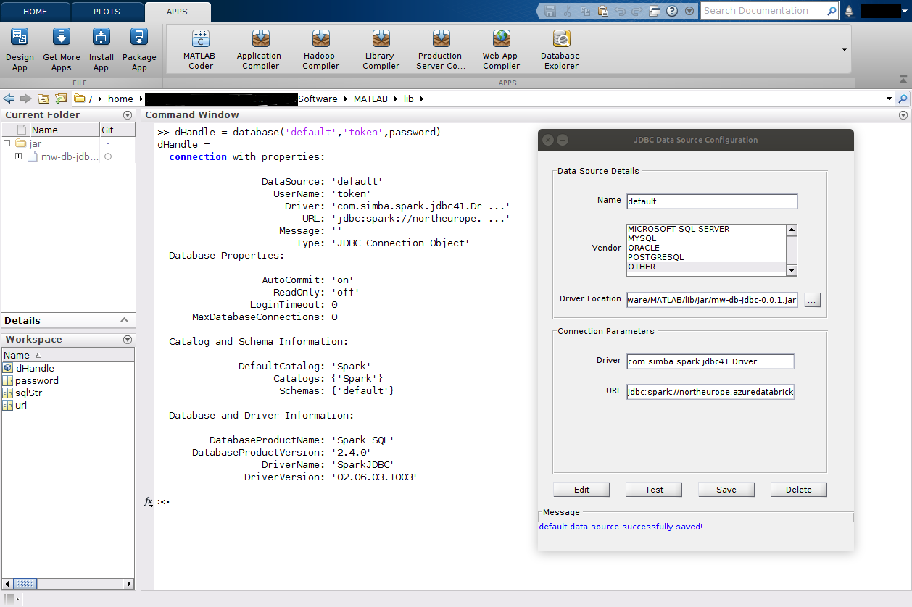

JDBC and Database Toolbox workflow
This workflow requires a Databricks® JDBC driver which must be downloaded from
Databricks. The jarFilePath
name-value pair can be used to specify the path to the driver.
See Installing JDBC Driver for download and Java version
compatibility details.
The driver must be on the MATLAB® dynamic Java® class path to be used.
The creation of a databricks.JDBCConnection object adds the driver to the path
ordinarily.
The package supports both Databricks JDBC drivers:
Versions >= 2.7.3 and < 3.0.0 (the non-OSS Simba based driver).
Versions 3.0.3 and newer (the OSS driver).
The OSS driver requires that MATLAB uses a Java environment of v11 or greater, see: Installing JDBC Driver.
Apart from using a JDBC driver to connect to Databricks through Database Toolbox™, it is also possible to connect through Database Toolbox and an ODBC driver.
Connect to Databricks using Database Toolbox
Database Toolbox provides both GUI and programmatic interfaces for configuring connections to databases. In this section both approaches are described, in general the programmatic approach is used however the GUI based approach can be useful for testing and debugging.
Further, Databricks offers two ways of connecting over JDBC:
To a specific cluster.
To a SQL Warehouse.
Refer to the SQL Warehouses API documentation for more information on how to connect to a SQL warehouse.
Creating a connection programmatically
The databricks.JDBCConnection class is used to create a configured JDBC Database
Connection object. The JDBCdatabase.jdbc.connection object is stored in the
JDBCConnection.Connection property. By default the class will use the same
authentication method used by the REST API interfaces, see Authentication.md.
The following named arguments can be used to override the values
obtained from settings & configuration files and defaults when creating a
databricks.JDBCConnection object.
Optional named argument types and defaults
Name |
Type |
Default |
|---|---|---|
driverClass |
string |
"com.databricks.client.jdbc.Driver" |
jarFilePath |
string |
Depends on drivers & Java version |
useDriverType |
char |
Must be either 'oss' or 'simba' |
connectionURL |
string |
|
connectionURLAppend |
string |
|
host |
string |
|
port |
string |
"443" |
schema |
string |
"default" |
catalog |
string |
|
cluster |
databricks.Cluster/string |
|
useDriverAuth |
logical |
true |
authMethod |
matlab.databricks.AuthMethod |
Settings file authMethod value |
profileName |
string |
Settings file profileName value |
OauthService |
matlab.databricks.OauthService |
matlab.databricks.OauthService.Databricks |
oauth2ClientId |
string |
"databricks-sql-jdbc" |
passthroughAccessToken |
string |
|
passthroughRefreshToken |
string |
|
scope |
string |
|
TokenCachePassPhrase |
string |
|
enableTokenCache |
logical |
|
cacheFilePath |
string |
|
httpPath |
string |
|
ssl |
logical |
true |
thriftTransport |
int32 |
|
defaultStringColumnLength |
int32 |
|
disableSourceCreation |
logical |
false |
dataSourceName |
string |
|
logLevel |
string |
"0" |
verbose |
logical |
true |
Optional named argument descriptions
Name |
Description |
|---|---|
driverClass |
Class name of the JDBC driver |
jarFilePath |
Path to the JDBC driver jar file |
useDriverType |
Used to select a specific driver type |
connectionURL |
Overrides the complete connection URL value |
connectionURLAppend |
Append further values to the connection URL |
host |
Databricks Workspace hostname |
Port |
Port to be used by the connection |
schema |
Name of the database/schema to use |
catalog |
Set the Unity Catalog catalog |
cluster |
databricks.Cluster or Cluster Id text value |
useDriverAuth |
The driver's Oauth2 auth used by default |
authMethod |
Use a non default authentication method |
profileName |
Name of a profile in |
OauthService |
Specify an OAuth service provider |
oauth2ClientId |
The Client Id for OAuth 2.0 authentication |
passthroughAccessToken |
Value for a token that is passed opaquely |
passthroughRefreshToken |
Refresh token to be passed opaquely |
scope |
Sets the scope used with OAuth flows |
TokenCachePassPhrase |
Refresh token encryption when using driver |
enableTokenCache |
Enables token caching when using the driver |
cacheFilePath |
Token cache used with the packages' Oauth2 |
httpPath |
Overrides httpPath in the connection URL |
ssl |
Enable SSL flag |
thriftTransport |
thriftTransport level (ignored by OSS driver) |
defaultStringColumnLength |
Max length of string columns |
disableSourceCreation |
Prevents automatic data source creation |
dataSourceName |
Non default name for a data source if saved |
logLevel |
Logging level, the default value is: "0" |
verbose |
Logical flag to enable more or less feedback |
For more details see: Databricks-JDBC-Driver-Install-and-Configuration-Guide.pdf.
See Authentication for environment variable configuration details.
If a connection cannot be created an empty database.jdbc.connection is returned
in the connection property. If a JDBC Driver Error is returned in the connection's
Message property it will be displayed but an error will not be raised directly.
Returning a connection generally takes a few seconds.
It is good practice to call the Connection property's close method when the connection is no longer needed. The object's close method will also call the connection's close method.
Examples using default authentication details:
j = databricks.JDBCConnection();
myData = fetch(j.Connection, "SELECT * FROM mycatalog.mydatabasename.myDatabaseTable LIMIT 10");
% or set a default catalog and schema for the connection
j = databricks.JDBCConnection(catalog='mycatalog', schema='mydatabasename');
% Use Database Toolbox to read an entire table of data
myData = sqlread(j.Connection, 'myDatabaseTable');
Working with the Database Explorer app
When Database Toolbox is installed the Database Explorer app can be found via the apps
tab or by calling databaseExplorer from the MATLAB console.
Database Explorer uses the Data Sources to create connections. A connection can be configured manually using the UI as described below or programmatically as follows:
Create a connection, as previously described.
j = databricks.JDBCConnection();
Save the connection as a data source, by default the source name will be: Databricks-<Cluster Id>.
A source is created when a connection is created but it is not saved
unless saveSource is called.
j.saveSource()
Copy the connection's token/password to the clipboard for later use in the GUI.
This token/password value is sensitive.
j.copyToken()
Then in the Database Explorer app select the newly created data source. When the username and password are requested, enter "token" as username and paste the token value from the clipboard as the password. Once created, the app will ask for the catalog and schema to connect to before displaying a list of tables. One can then proceed to explore the data and build up queries that can be easily imported into MATLAB code.
SQL Warehouse Connection
A SQL Warehouse connection is created slightly differently from a cluster based connection, using the Warehouse's id.
warehouse = databricks.SQLWarehouse;
warehouse.id = "qfufxboufejuuibuxbz";
conn = warehouse.connect();
myData = fetch(conn, "SELECT * FROM mycatalog.mydatabasename.myDatabaseTable LIMIT 10");
Testing a connection
To verify that a connection has been established successfully, call the testConnection method:
[tf, message] = j.testConnection();
Manually Creating a connection using Database Toolbox (Not recommended)
A number of values are required to connect and authenticate with Databricks as shown previously. To create a Database Toolbox GUI based connection begin by configuring a JDBC datasource. The values for which should be set as follows:
Field |
Value |
|---|---|
Name |
The name of the database, in this case 'default' |
Vendor |
OTHER |
Driver Location |
Path to the downloaded JDBC driver jar file, e.g. '/path/to/databricks-jdbc-2.8.0.jar' |
Driver |
com.databricks.client.jdbc.Driver |
URL |
jdbc:databricks://EndpointHost:443/ |
When the fields of the URL are populated, assuming use of Azure®, the completed value will resemble:
jdbc:databricks://<redacted>.azuredatabricks.net:443/default;transportMode=http;ssl=1;httpPath=sql/protocolv1/o/1234567891234567/0406-211843-kmiwte6o;thriftTransport=2;AuthMech=3;UID=token;PWD=<REDACTED>;UserAgentEntry=MathWorks_MATLAB/25.2.0;LogLevel=0;
If using databricks.JDBCConnection, the resulting URL can be access using the
ConnectionURLhidden property.
The driver name value is com.databricks.client.jdbc.Driver. With older drivers
this value differed.
When the data source has been created and saved it can be used by the database()
function. Note the username value is set to token and the password value should
be that of token itself (see below). Output similar to that shown should be returned.
If not checking the value of dHandle.Message may be helpful.
conn = database('default','token',password);
>> conn
ans =
connection with properties:
DataSource: 'default'
UserName: 'token'
Driver: 'com.databricks.client.jdb ...'
URL: 'jdbc:databricks://adb-605 ...'
Message: ''
Type: 'JDBC Connection Object'
Database Properties:
AutoCommit: 'on'
ReadOnly: 'off'
LoginTimeout: 0
MaxDatabaseConnections: 0
Catalog and Schema Information:
DefaultCatalog: 'hive_metastore'
Catalogs: {'consulting', 'hive_metastore', 'main' ... and 2 more}
Schemas: {'global_temp', 'default', 'default' ... and 11 more}
Database and Driver Information:
DatabaseProductName: 'SparkSQL'
DatabaseProductVersion: '3.5.0'
DriverName: 'DatabricksJDBC'
DriverVersion: '02.07.01.1004'

Note The use of default as a datasource name is not advised as this is often used as a database name also and this can hinder the creations of a database handle.
Example usage
The following simple example assumes a sample table that ships with MATLAB in CSV format has previously been imported into Databricks.
% outages.csv can be found here:
which('outages.csv')
/usr/local/MATLAB/R2024b/toolbox/matlab/demos/outages.csv
% Create the connection
j = databricks.JDBCConnection;
% Read the entire table
data = sqlread(j.Connection, 'mycatalog.mydatabasename.outages');
Display the first few lines of the table
head(data,3)
>> head(data,3)
Region OutageTime Loss Customers RestorationTime Cause
_____________ _________________________ ______ __________ _________________________ ________________
{'SouthWest'} {'2002-02-01 12:18:00.0'} 458.98 1.8202e+06 {'2002-02-07 16:50:00.0'} {'winter storm'}
{'SouthEast'} {'2003-01-23 00:49:00.0'} 530.14 2.1204e+05 {0×0 char } {'winter storm'}
{'SouthEast'} {'2003-02-07 21:15:00.0'} 289.4 1.4294e+05 {'2003-02-17 08:14:00.0'} {'winter storm'}
% Delete the table if no longer needed
execute(j.Connection, 'DROP TABLE mycatalog.mydatabasename.outages')
% Close the connection when done
close(j.Connection);
Write performance
Simba driver (only) write performance can be improved significantly by setting the following database driver parameters:
UseNativeQuery=1;
EnableNativeParameterizedQuery=0;
This is enabled by default when connections are created but if desired can be disabled as follows:
warehouse = databricks.SQLWarehouse;
warehouse.id = "qfufxboufejuuibuxbz";
conn = warehouse.connect(useNativeQuery=false, enableNativeParameterizedQuery=true);
sqlwrite(conn, tablename, data)
or
c = createDatabricksCluster("dbwrite", 0 , useMATLAB=false)
databricks.internal.cluster.waitForClusterToStart(clusterId=c.cluster_id);
j = databricks.JDBCConnection(cluster=c, useNativeQuery=false, enableNativeParameterizedQuery=true);
sqlwrite(j.Connection, tablename, data)
Naming in Unity Catalog
Some naming limitations apply when accessing resources governed by Unity Catalog via SQL, for more details see: https://docs.databricks.com/en/sql/language-manual/sql-ref-names.html. Most commonly, a table or schema name might contain a hyphen, "-". In the following example the schema is named "my-schema", and so this must be enclosed by back-ticks within the query.
data = fetch(j.Connection, "SELECT * FROM mycatalog.`my-schema`.mytable");
Spark SQL support
This functionality is independent of the spark.sql() functionality which can also
be used to execute SQL commands on Databricks via the Spark™ sql API call.
This functionality is described in the Spark API documentation.
User Defined Functions (UDF) support
The automatic creation of UDFs and their respective registration functions and usage is described separately in the Spark API documentation. UDFs can be used to invoke compiled MATLAB code in SQL statements executed on a Databricks cluster by any language or external interface making SQL queries.
Authentication
See Authentication for more details of Personal Access Token and other authentication methods.
Authentication when running MATLAB on Databricks
When running MATLAB directly on a Databricks cluster, authentication is typically handled automatically through the cluster's configuration. However the credentials provided by the Databricks environment do not support JDBC connections.
The following approach can be used to avoid having to provide a PAT in this scenario
by using OauthU2M:
j = databricks.JDBCConnection(authMethod="OauthU2M", useDriverAuth=false)
data = fetch(j.Connection, "SELECT * FROM mycatalog.`my-schema`.mytable LIMIT 10");
t = table(data);
Note the
useDriverAuth=falseis important because the JDBC drivers Oauth flow is not supported when using MATLAB in the browser as the Java driver attempts to open a conventional browser, which is not possible when already running in a browser.
Proxy support
The Databricks JDBC driver supports SOCKS proxies only. JDBCConnection does not
currently attempt to configure proxy details.
Consider using connectionURLAppend to set details if required.
Token Caching
The enableTokenCache argument Controls caching of tokens when using driver based
authentication only. enableTokenCache is not supported prior to driver version
2.7.1 for Windows® or with 2.7.3 on Linux® & macOS®. Unless specified enableTokenCache
is enabled by default when supported. If using package based authentication
tokens are always cached unless the DISABLE_DATABRICKS_TOKEN_CACHE environment
variable is set to true. If PAT authentication is used caching is not used.